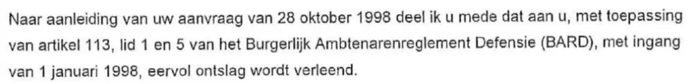

Prueba · Carta
Ministerio de Defensa a Barbara Overduyn, baja honrosa, 3 de noviembre de 1998
El pasaje
«En respuesta a su solicitud del 28 de octubre de 1998, le comunico que, en aplicación del artículo 113, apartados 1 y 5, del Reglamento de Funcionarios Civiles de Defensa (BARD), se le concede la baja honrosa con efectos desde el 1 de enero de 1998». Página 1, el párrafo dispositivo de la carta. Traducido del neerlandés; el texto original figura a continuación.
Texto original
“Naar aanleiding van uw aanvraag van 28 oktober 1998 deel ik u mede dat aan u, met toepassing van artikel 113, lid 1 en 5 van het Burgerlijk Ambtenarenreglement Defensie (BARD), met ingang van 1 januari 1998, eervol ontslag wordt verleend.” Las líneas de la imagen escaneada se han unido aquí.

Por qué importa este documento
Barbara Overduyn, la empleada del MID (servicio de inteligencia militar) que en el verano de 1998 trabajaba en Casema al mismo tiempo que Giltay, recibió la baja honrosa del servicio del Ministerio de Defensa con efectos desde el 1 de enero de 1998, de modo que, sobre el papel, se había marchado ya meses antes de aquel verano. La decisión misma no se tomó hasta el 3 de noviembre de 1998, tras su propia solicitud del 28 de octubre: una baja con efectos retroactivos de más de diez meses. La sección de voces cita la carta debido a esas fechas.
Procedencia
- Documento
- Carta por la que se concede la baja honrosa
- Remitente
- Ministerio de Defensa, Servicio de Inteligencia Militar, Postbus 20701, La Haya
- Firmado
- En nombre del secretario de Estado de Defensa, por el jefe del Servicio de Inteligencia Militar, el comodoro H.J. Vandeweijer. La firma misma está tachada en gran parte en el PDF publicado
- Delegación de firma
- La decisión se considera decisión del secretario de Estado de Defensa, Henk van Hoof, que es responsable de ella (artículo 10:2 de la Ley General de Derecho Administrativo, Awb). Por eso la cita de la sección de voces se le atribuye a él
- Destinataria
- La señora B.V. Overduyn, La Haya
- Fecha
- 3 de noviembre de 1998
- Referencia
- 980230/0749
- Asunto
- «Eervol ontslag» (baja honrosa)
- Referencias
- La solicitud de la propia Overduyn del 28 de octubre de 1998; artículo 113, apartados 1 y 5, del Reglamento de Funcionarios Civiles de Defensa (BARD)
- Fecha de entrada en vigor
- 1 de enero de 1998
- Vía de recurso
- Recurso administrativo (bezwaar) ante el firmante en un plazo de seis semanas a partir de la notificación
- Idioma
- Neerlandés
- Páginas
- 1
Citado en:
- el ensayo «La prohibición cayó, el libro quedó en pie» en la diapositiva «Casema · 1998» de la presentación «La historia en el mapa»
- la sección de voces bajo el epígrafe «Victoria judicial».
Documento: https://
Modificado por última vez el 13 de septiembre de 2026, consultado el 27 de noviembre de 2026.

Esta página es una ficha de prueba del libro El general del encubrimiento de Edwin Giltay y del sitio web que lo acompaña.